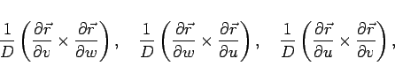
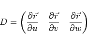
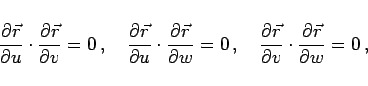

Inhalt Index DeskTop Bronstein

 Lineare Algebra Tensoren Tensoren in krummlinigen Koordinatensystemen Kovariante und kontravariante Basisvektoren
Lineare Algebra Tensoren Tensoren in krummlinigen Koordinatensystemen Kovariante und kontravariante Basisvektoren


Die drei Vektoren
|  | (4.83a) |
mit der Funktionaldeterminante
|  | (4.83b) |
stehen im betrachteten Flächenelement jeweils auf einer der Koordinatenflächen senkrecht und bilden die sogenannte kontravariante Basis des krummlinigen Koordinatensystems.
Hinweis: In orthogonalen krummlinigen Koordinaten, für die
|  | (4.84) |
gilt, fallen die Richtungen der kovarianten und kontravarianten Basis zusammen.